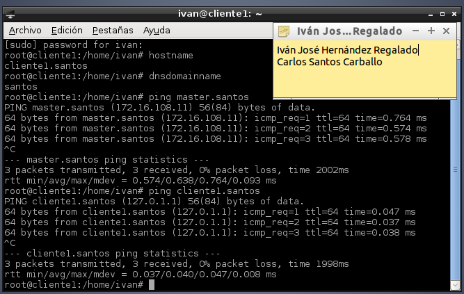
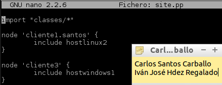

- Módulo: Sistemas Operativos
- Título del trabajo Infraestructura
- Componentes del grupo: Carlos Santos Carballo e Iván José Hdez Regalado
- Curso Académico: 2014/2015
- Fecha de entrega: 5 de Febrero de 2015
Como primer paso tenemos que asegurarnos que tenemos una ip estática.
Tenemos que modificar el fichero /etc/resolv.conf introduciendo los siguientes datos.
Cambiamos el nombre de host de la máquina.
En el fichero /etc/hosts introdcimos las direccones ip de los clientes.
Nos aseguramos que todo está correctamente configurado y que existe conexión entre ambas.
A continuación instalamos el puppet master.
En el directorio /etc/puppet/manifests creamos un fichero llamado "site.pp" y otro directorio llamado "classes" y dentro de él el fichero "hostlinux1.pp"
Introducimos la siguiente información en el fichero "site.pp" para añadir el hostlinux1 en la confiiguracion del puppet.
Dentro del fichero "Hostlinux1.pp" añadimos los paquetes que queremos que se instalen en él.
Primero debemos configurar la ip de la máquina.
Cambiamos el nombre.
Tenemos que modificar el fichero /etc/resolv.conf introduciendo los siguientes datos.
Nos aseguramos que todo está correctamente configurado y que existe conexión entre ambas.
A continuación instalamos el puppet.
Ahora debemos configurar el fichero /etc/puppet/puppet.conf e indicar cúal es nuestro servidor.
También debemos modificar el fichero /etc/default/puppet para indicar que inicie puppet desde el arranque de la máquina.
Antes de que el master acepte al cliente 1,se deben intercambiar los certificados, posteriormente lo aceptamos. Para ello debemos ejecutar los siguientes comandos:
Ahora en el cliente reiniciamos y deberia haberse hechos los cambios, en nuestro caso no se produjo y tuvimos que ingresar el siguiente comando.
A continuación realizaremos el mismo paso pero modificaremos el contenido del fichero "hostlinux2.pp" para que se produzcan otros cambios.
Verificamos en el cliente que se produjeron los cambios satisfactoriamente.
Configuramos la tarjeta de red y modificamos el fichero "hosts"
Instalamos el puppet en Windows teniendo en cuenta que sea la misma versión que en el servidor.
En el directorio /etc/puppet/manifests/classes creamos el fichero "hostwindows1" con la siguiente información.

Añadimos al fichero "site.pp" el cliente de windows.
Antes de que el master acepte al cliente 2,se deben intercambiar los certificados, posteriormente lo aceptamos. Para ello debemos ejecutar los siguientes comandos:
Posteriormente vamos al cliente 2 y ejecutamos el siguiente comando, una vez realizado se deberian producir los cambios.
A continuación modificamos los ficheros "hostwindows2" y "site.pp" y vemos los cambios.
Comprobamos que se produjeron los cambios.